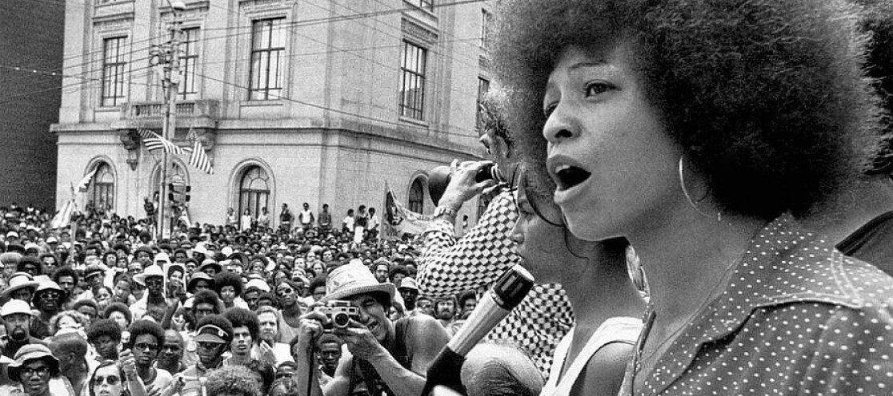

Angela Davis, militante norte americana negra se destacou na década de 1960 no estado do Alabama-EUA, onde participou de movimentos negros e feministas como os “ Panteras Negras”.
"Eu não estou mais aceitando as coisas que eu não posso mudar, eu estou mudando as coisas que eu não posso aceitar." - Angela Davis
Angela nasceu em 1944 no Alabama, um dos principais centro de conflitos raciais do país. Desde criança destacou-se por ser uma leitora voraz ganhando uma bolsa para estudantes negros no norte dos EUA. Iniciando os estudos em New York travou conhecimento com o comunismo e o socialismo, sendo recrutada para uma organização comunista de jovens estudantes.  Militante e participante ativa dos movimentos negros e feministas, na década 1970 passa a ser uma das fugitivas mais procuradas pelo FBI, acusada de conspiração, homicídio e sequestro. Dezoito meses após o início do julgamento, Angela foi inocentada de todas as acusações e libertada, sendo homenageada por músicos como John Lennon e Rolling Stones. Angela continua a proferir discursos e palestras, principalmente em ambientes universitários e se mantém como uma figura proeminente na luta pela abolição da pena de morte na Califórnia. Em 1977-1978 foi-lhe atribuído o Prêmio Lênin da Paz.
Autora: Isabela Silva
Developer Front-End/ Estudante {Reprograma}
https://github.com/silvaisabela